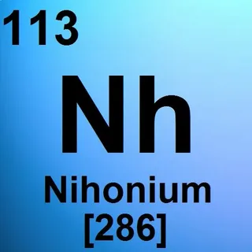
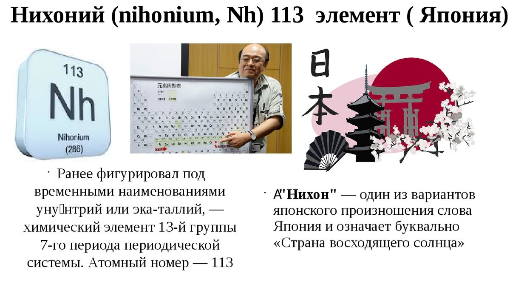
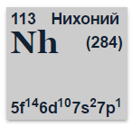

Нихоний(Nh)

Нихоний-синтетический химичиский элемент под номером 113.Впервые его пыталась синтезировать в 1998 году в Японии, при помощи бомбардировки атома висмута 209, который разогнали до 10% скорости света, атомами цинка 70.Нихоний служит самым известныи человечеству элементов, самым сложным в получении одного атома

Далеесообщалось, что нихоний был создан в 2003 году российско–американским сотрудничеством в Объединенном институте ядерных исследований (ОИЯИ) в Дубне, Россия, и в 2004 году группой японских ученых в Riken в Вако, Япония. В подтверждении их претензий в последующие годы участвовали независимые группы ученых, работающие в Соединенных Штатах, Германии, Швеции и Китае, а также первоначальные заявители в России и Японии. Команда Riken предложила название nihonium в 2016 году, которое было утверждено в том же году. Название происходит от распространенного японского названия Японии.

Нихоний является самым дорогим металлом в мире.1 атом элемента, стоит около 7,5 млн. долларов.